Statuz 项目交接文档
为 AI Agent 设计的持久化依赖图引擎 — Better Engine, Better Diagram, Better Loop
执行摘要
Statuz 是一个持久化、跨工具的依赖图引擎，为 AI Agent 设计，配有决定 Agent 当前需要知道什么的注意力层。它不是协议、不是数据库、不是 RAG 系统——它是 agent 状态基础设施，更接近文件系统或版本控制对象模型。
权威定位文档：POSITIONING_7_25.md（2026-07-25）。当其他文档与此冲突时，以此为准。
当前状态
| 维度 | 状态 | 说明 |
|---|---|---|
| 核心引擎 (statuz-core) | 活跃开发 | ~2500 行 Rust，11 命令 CLI，11 阶段自测 |
| 表示层 crate (arrow-map/niche/syn) | 占位符 | 已创建骨架，编译通过，无功能逻辑 |
| NAPI 绑定 (statuz-core-napi) | 冻结 | 构建管线已配置，推迟到 Dashboard 阶段 |
| 遗留 TS/Python 代码 (packages/) | 冻结 | 旧范式产物，待替换，不可恢复 |
| 旧文档 (leftover/) | 存档 | 仅参考，不可恢复 |
| 官网 | 完成 | 1471 行单页 HTML，零依赖 |
| GitHub CI | 部分 | ci.yml 已配置，release.yml 已配置 |
| GitHub Release | 未创建 | v0.1.0-alpha 待发布 |
项目历史
| 时期 | 范式 | 状态 |
|---|---|---|
| 2026年6月 | TypeScript + YAML 协议范式 | 冻结，迁移至 leftover/ |
| 2026年7月 | 范式转换 → Rust 图引擎 | 当前，活跃开发 |
什么不是 Statuz
| 不是 | 原因 |
|---|---|
| 传输协议 | 那是 MCP 的职责。Statuz 通过 MCP 被访问，不替代它 |
| 数据库 | 没有超过三个查询以外的操作 |
| 向量存储 / RAG | RAG 假设 Agent 知道该问什么，长周期 Agent 不知道 |
| 内容数据库 | 不存储源文件/文档，只存储拓扑关系 |
| YAML 文档系统 | 旧范式已死，引擎使用 msgpack 二进制存储 |
| 实时同步系统 | 仅离线文件共享 |
| 多 Cluster 系统 | 尚未实现，Cluster 边界是设计约束 |
设计哲学
来源：STATUZ设计哲学的论述.md — Dr. Ceaserzhao
核心问题
LLM 始终在预测和压缩，信息留存量递减，文档完全无用，像是一个老年人用伟哥。用户不可能任何时间都进入良好的工作和创作状态，睡醒之后完全忘了方向，几个提示词下去整个对话节奏就全乱了。项目和所处的生态系统的全部关键信息保存在 statuz 里，让 agent 可以真正的无缝打工。
Statuz 要解决的核心问题是：让 AI 知道自己和项目的状态——知道自己在干什么、干这个事的意义、以及所干的事情在整体生态位中的位置。不仅是项目的前因后果和下一步干什么（这是最基本的要求，而且 git 都基本实现这个要求了），而是更高层次的状态感知。
三大口号
Better Engine
depsgraph 同构的内核。纯拓扑计算，无语义判断。Cluster 原始图是权威的、内容寻址的。计算 reachability，不做理解。
Better Diagram
工作集投影。Agent 和人类实际看到的是注意力排名的评估图，而非原图。排名、衰减、任务上下文化的内容存在于派生的、可丢弃的投影中。
Better Loop
tag → impact-flush → recompute attention。增量、多速率循环。结构变更和价值变更走两个时钟。
核心设计原则
- 信息主动释放：像人脑工作记忆，而非被动检索。这是与 RAG 的根本区别——RAG 假设 Agent 知道该问什么，长周期 Agent 不知道
- 不被上下文局限：项目和生态系统的全部关键信息保存在 Statuz 里，让 Agent 无缝打工
- 功能涌现：Statuz 只专注核心和交互模式，功能从基座中涌现。只有 statuz 实现底座，人们才能在 dashboard 里盖上摩天大楼
- 双图分离：Cluster 原始图永不被评估修改，排名/衰减/上下文化存在于派生的工作集投影中
- impact() 是传播原语：不仅是读查询，事件标记变更节点后沿依赖边刷新。刷新波完成传播且无新节点被标记时，Loop 收敛
- 边是字段限定的：关系连接
(node, field)对，不是两个抽象节点
主动释放的管道定义
主动释放不是任何一层能单独声称的组件，而是一个端到端管道：
- 内核发射纯拓扑信号（中心性、新近性、差异量级、种子随机游走分数）
- 表征层为特定
(agent, task)执行相关性仲裁 - 结果是 Agent 接收的工作集投影
不要被 Core 的设计锚定
Core 是底座，而 dashboard 才是实现和定制具体功能的地方（比如默认的 pending action）。关于 niche 和别的组件的论述需要日后重新讨论。Statuz 只用专注核心和交互模式，而那些功能都是由我们的基座中涌现出来的。
项目定位
来源：POSITIONING_7_25.md（权威定位文档，2026-07-25）
准确定义
Statuz 是一个持久化、跨工具的依赖图引擎，为 AI Agent 设计，配有决定 Agent 当前需要知道什么的注意力层。
"协议"一词已退役。Statuz 不是传输协议，不定义字节如何在各方之间移动（那是 MCP 的职责）。准确表述是 agent 状态基础设施，更接近文件系统或版本控制对象模型。
内核查询面
内核查询面固定为三个原语：traverse、impact、path。其他操作（subgraph、validate 等）是这三个的组合或工具，不是第四、第五个"核心查询"。
北极星指标
Context-recovery cost：Agent 在会话边界后，达到能有效处理长周期任务状态所需的工具调用数（或 token 数）。通过 judge statuz 配对 A/B 测试衡量（statuz-on vs statuz-off）。
Cluster 边界论述
Cluster 是共享本体论成立的最大单元——语义自洽可维护的最大半径。Cluster 边界是逻辑后果，不是待修复的缺陷。
- 传输问题已解决（MCP 的职责）
- 对齐问题是开放的（本体论匹配是数十年未解难题）
- 跨 Cluster 桥接只能在表征层生成置信度加权的假设映射，置信度远低于 1，永不进入内核作为边
- "我们自己的 A2A 模式" = 表征层生成置信度加权、始终可修订的 Cluster 间假设映射
Field Channels 定义
Field Channel 不是从零设计的机制，而是任务种子随机游走计算工作集投影时，到达通过 bridge 跨字段共享的节点，其激活溢出到相邻字段时发生的事情。
愿景全景图
Statuz 解决的问题域、提供的解决方案、以及设计哲学之间的关系。
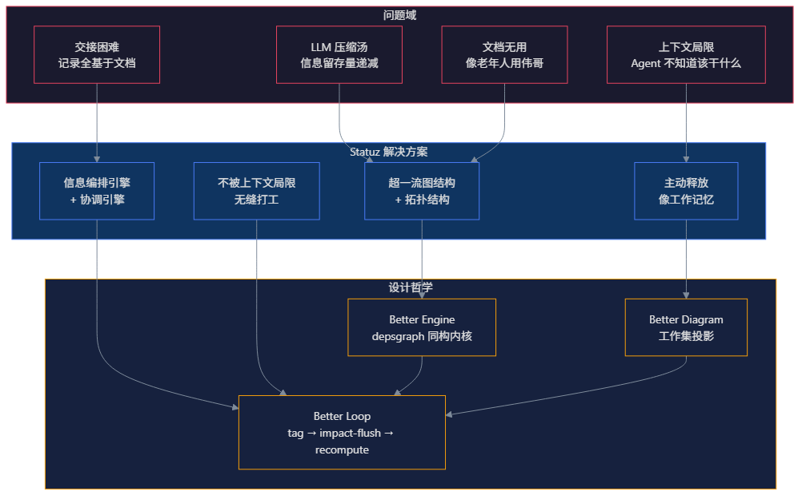
三层架构愿景
Statuz 的权威架构定义来自 POSITIONING_7_25.md，分为三层：内核、表征层、注意力层。
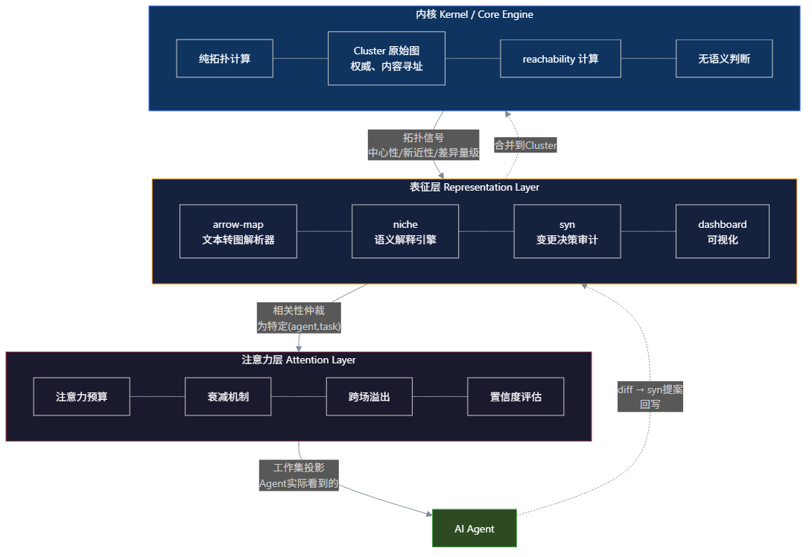
各层职责
| 层 | 职责 | 关键特性 |
|---|---|---|
| 内核 (Kernel) | 纯拓扑计算，reachability | 权威原始图、内容寻址、无语义判断、不可变 |
| 表征层 (Representation) | 语义、判断、所有可能出错的东西 | 允许犯错、允许调用 LLM、允许有观点 |
| 注意力层 (Attention) | 注意力预算、衰减、溢出、置信度 | 真正的研究前沿、工作集投影 |
内核设计承诺（与 Blender depsgraph 同构）
- 双图分离：Cluster（原始图）永不被评估修改。排名、衰减、任务上下文化的内容存在于派生的、可丢弃的工作集投影中
- impact() 是 Loop 的传播原语：不仅是读查询。事件标记变更节点，impact() 将标记沿依赖边刷新到受影响的下游节点。刷新波完成传播且无新节点被标记时，Loop 收敛
- 结构变更和价值变更走两个时钟：边出现/消失是罕见的、昂贵的、必须走 proposal 机制；更新注意力/置信度/派生权重是频繁的、廉价的、完全在工作集投影中
- 边是字段限定的：关系连接 (node, field) 对，不是两个抽象节点
当前实现状态：仅内核层（statuz-core）已实现。表征层（arrow-map/niche/syn）为占位符。注意力层尚未开始。
信息循环机制
Better Loop 的核心是 tag → impact-flush → recompute attention 循环，配合双时钟机制和双图分离。
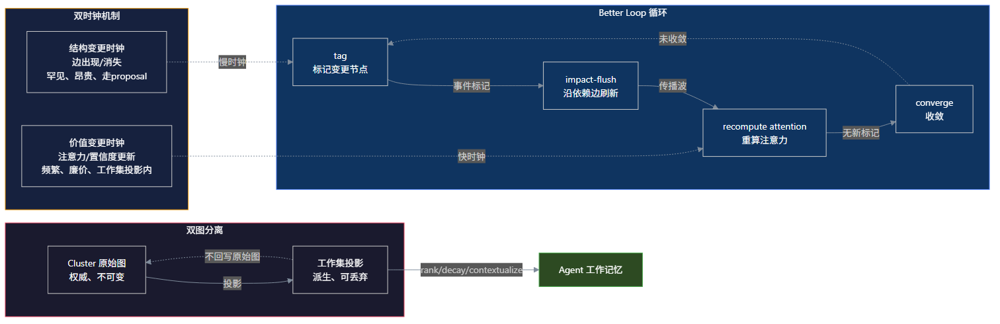
双时钟机制
| 时钟 | 变更类型 | 频率 | 机制 |
|---|---|---|---|
| 结构变更（慢时钟） | 边出现/消失 | 罕见、昂贵 | 必须走 proposal 机制 |
| 价值变更（快时钟） | 注意力/置信度/派生权重更新 | 频繁、廉价 | 完全在工作集投影中 |
双图分离
- Cluster 原始图：权威的、内容寻址的、不可变
- 工作集投影：派生的、可丢弃的。rank/decay/contextualize 在这里进行
- 工作集投影不回写原始图——它是临时的、任务限定的
Cluster 生态系统
Cluster 是信息宇宙的边界——共享本体论成立的最大单元。两个 Cluster 之间不能联通（设计约束，非技术限制）。
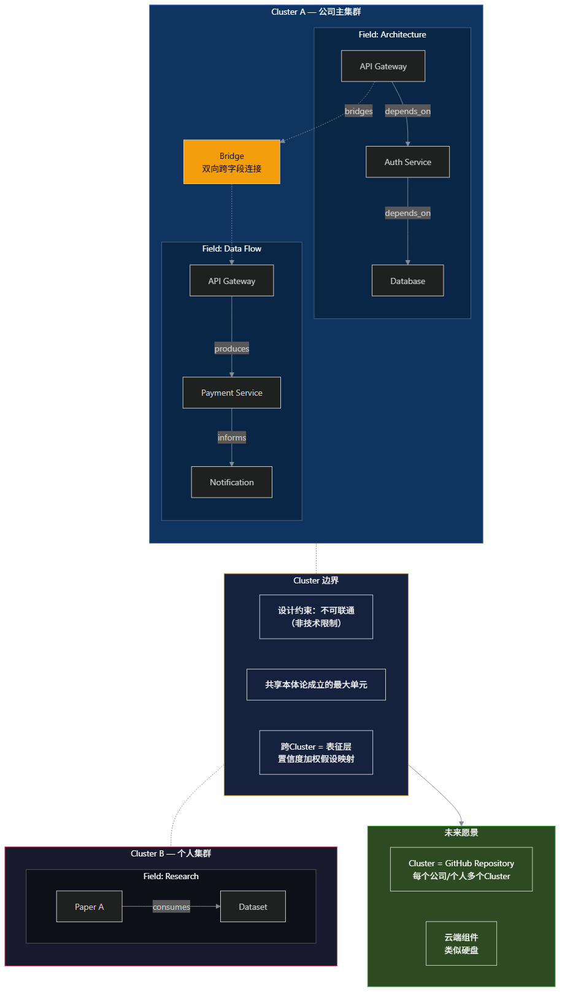
Cluster 架构
Field 定义
Field 是 Cluster 内的语义子空间。每个 Field 有自己的 GraphEngine 实例但共享 Cluster 的节点注册表。提供视角隔离——不同团队看到同一拓扑的不同视图。通过 bridge 实现有语义的双向连接。
Metaclass 理论
Metaclass 是独立的理论系统，定义信息存在的形式。Statuz 的 field 是其具体化实例（第一个实例化场景而非全部意义）。Metaclass 包含约束、行为定义和公理，而非仅约束区域。Field 是元类的实例化而非被分类对象。
未来愿景
Cluster 将像 GitHub 仓库一样运作——每个公司或个人拥有多个 Cluster，作为云端组件（类似硬盘，虽然这个类比在哲学上是降级的）。公司主 Cluster 包含不同 Field（架构、数据流等），个人 Cluster 包含研究 Field。
Crate 依赖关系
Cargo Workspace 包含 5 个成员 crate。statuz-core 是唯一活跃开发的核心，其余为占位符或冻结状态。
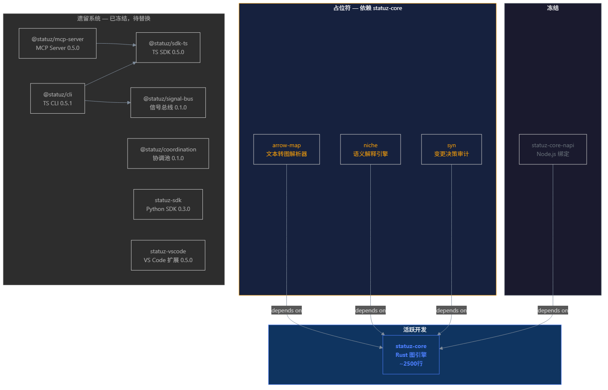
Crate 状态表
| Crate | 状态 | 定位 | 版本 | 依赖 |
|---|---|---|---|---|
statuz-core | 活跃 | Rust 图引擎核心 | 0.1.0 | serde, rmp-serde, blake3, argon2, zstd, chacha20, clap, serde_json, rand, hex |
arrow-map | 占位符 | 文本转图解析器 | 0.1.0 | statuz-core |
niche | 占位符 | 语义解释引擎 | 0.1.0 | statuz-core |
syn | 占位符 | 变更决策审计系统 | 0.1.0 | statuz-core |
statuz-core-napi | 冻结 | Node.js N-API 绑定 | 0.1.0 | statuz-core, napi v2, napi-derive v2 |
表示层 crate 约束：arrow-map、niche、syn 必须通过 statuz-core 公共 API 通信，不得创建独立存储、CLI 命令或 Schema 文件。它们是对应三个交互阶段的 crate，不创造独立存储格式。
遗留 packages/ 目录（已冻结）
| 包名 | 版本 | 用途 |
|---|---|---|
@statuz/cli | 0.5.1 | TS CLI，含 13+ 子命令模块 |
@statuz/sdk-ts | 0.5.0 | TypeScript SDK |
@statuz/mcp-server | 0.5.0 | MCP Server |
@statuz/coordination | 0.1.0 | 协调池服务（Express + Docker） |
@statuz/signal-bus | 0.1.0 | HTTP 信号总线 |
statuz-sdk (Python) | 0.3.0 | Python SDK |
@statuz/statuz | 0.5.1 | 超级包（聚合 CLI + SDK + MCP） |
statuz-vscode | 0.5.0 | VS Code 扩展 |
引擎代码架构
四层代码架构：CLI → 公共 API → Cluster 层 → Graph 层 → Storage 层。
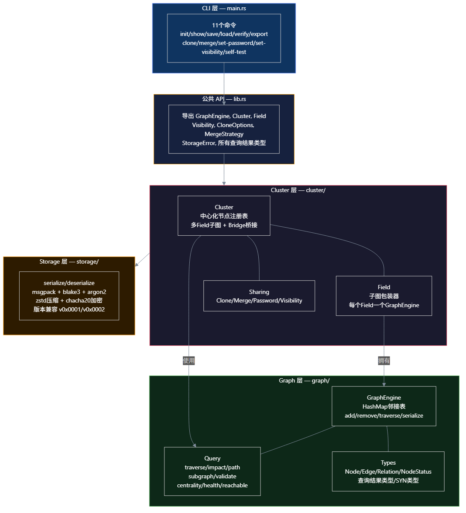
模块组织
GraphEngine 核心数据结构
pub struct GraphEngine {
nodes: HashMap<NodeId, Node>, // 节点注册表
edges: HashMap<EdgeId, Edge>, // 边注册表
adj: HashMap<NodeId, AdjacencyCell>, // 邻接表
}
pub struct AdjacencyCell {
pub node_id: NodeId,
pub outgoing: HashMap<String, Vec<Edge>>, // relation → 出边
pub incoming: HashMap<String, Vec<Edge>>, // relation → 入边
}邻接表按 relation 分组存储，支持按关系类型 O(1) 过滤查询。边数据克隆两份分别存入 source 的 outgoing 和 target 的 incoming，实现双向查找。模块依赖链：graph::types → graph::engine → graph::query → cluster::cluster → cluster::field → cluster::sharing → storage::mod
GraphEngine 公开方法
| 方法 | 说明 |
|---|---|
new() -> Self | 创建空图 |
add_node(&mut self, node: Node) | 添加节点并初始化邻接单元 |
add_edge(&mut self, edge: Edge) | 添加边，同时写入 outgoing 和 incoming |
remove_node(&mut self, id: &NodeId) | 级联删除：移除节点及所有关联边 |
remove_edge(&mut self, id: &EdgeId) | 从边注册表、outgoing、incoming 三处移除 |
get_node/get_edge/all_nodes/all_edges | 查询方法 |
outgoing_edges(node_id, relation?) | 按关系过滤出边 |
incoming_edges(node_id, relation?) | 按关系过滤入边 |
to_json() / from_json() | JSON 序列化/反序列化 |
数据模型
核心类型系统：Node、Edge、Cluster、Field 及其关系。
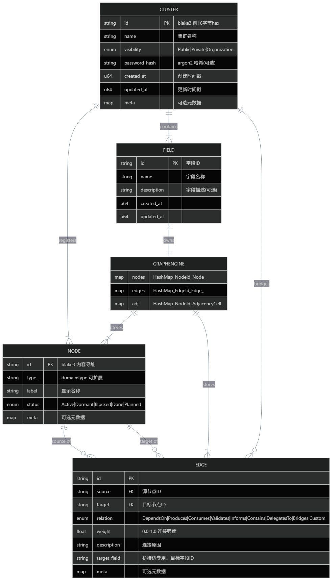
Node 结构体
pub struct Node {
pub id: NodeId, // blake3 内容寻址
pub type_: String, // "domain:type" 可扩展格式
pub label: String, // 显示名称
pub status: NodeStatus, // Active | Dormant | Blocked | Done | Planned
pub meta: Option<HashMap<String, String>>, // 可选元数据
}Edge 结构体
pub struct Edge {
pub id: EdgeId,
pub source: NodeId,
pub target: NodeId,
pub relation: Relation, // 语义关系类型
pub weight: f64, // 0.0-1.0 连接强度
pub description: String, // 连接原因
pub target_field: Option<FieldId>, // 桥接边专用
pub meta: Option<HashMap<String, String>>,
}Relation 枚举（可扩展）
| 关系 | 序列化值 | 语义 |
|---|---|---|
DependsOn | depends_on | 服务依赖关系 |
Produces | produces | 数据生产 |
Consumes | consumes | 数据消费 |
Validates | validates | 验证关系 |
Informs | informs | 信息传递 |
Contains | contains | 层级关系 |
DelegatesTo | delegates_to | 任务委派 |
Bridges | bridges | 跨 Field 连接（专用） |
Custom(String) | 任意字符串 | 自定义扩展关系 |
SYN 类型（定义在 core 中避免循环依赖）
niche::Engine::drift_to_syn() 返回 SynProposal。syn::SynEngine::approve/reject() 操作 SynProposal。
SynStatus: Draft → UnderReview → Approved/Rejected → ImplementedSynOption: label, description, merge_strategy (skip/overwrite/rename/merge_meta)AuditEntry: timestamp, actor, action, detailSynProposal: id, summary, description, options, diff, audit_trail, status, created_at
查询结果类型
| 类型 | 字段 | 用途 |
|---|---|---|
ImpactResult | changed, affected, blast_radius, critical_path | 影响分析结果 |
PathResult | from, to, path, field_path, length, exists | 路径查询结果 |
HealthReport | total_nodes, total_edges, orphans, sinks, sources, high_centrality, disconnected_components | 图健康报告 |
SubgraphResult | nodes, edges | 子图提取结果 |
DiffResult | added/removed/changed nodes, edges, fields, bridges | Cluster 差异对比 |
ValidationResult | issues, is_valid | 验证结果（含 IssueSeverity 和 IssueCategory） |
存储格式
.stz 二进制格式：msgpack + blake3 + argon2 + zstd + chacha20。
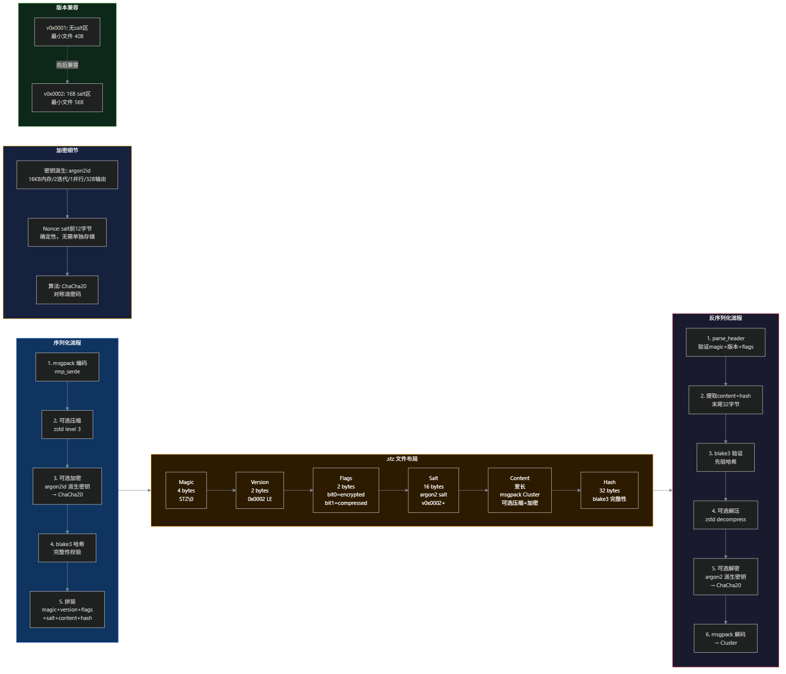
二进制布局
[magic: 4B] "STZ\0" (0x53 0x54 0x5A 0x00)
[version: 2B] u16 LE (当前 0x0002, 兼容 0x0001)
[flags: 2B] bit0=encrypted, bit1=compressed
[salt: 16B] argon2 salt (v0x0002+, 未加密时全零)
[content: 变长] msgpack 编码的 Cluster (可选压缩+加密)
[hash: 32B] blake3 完整性哈希 (仅覆盖 content)序列化流程（5 步）
- msgpack 编码：
rmp_serde::to_vec(cluster) - 可选压缩：zstd level 3（
compress_content） - 可选加密：随机生成 16B salt → argon2id 派生 32B 密钥 → ChaCha20 流密码加密
- 哈希：
blake3::hash(content)计算完整性哈希 - 拼装：magic + version + flags + salt + content + hash
反序列化流程
parse_header：验证 magic、版本范围、解析 flags，确定 content_start- 提取 content 和末尾 32B hash
- 先验证 blake3 哈希（在解密/解压前）
- 若 compressed → zstd 解压
- 若 encrypted → 从 header 后取 salt + argon2 派生密钥 + ChaCha20 解密
- msgpack 解码为 Cluster
加密细节
| 项目 | 规格 |
|---|---|
| 密钥派生 | argon2id（16KB 内存、2 次迭代、1 并行度、32B 输出） |
| Nonce | salt 的前 12 字节（确定性，无需单独存储） |
| 算法 | ChaCha20 对称流密码（加解密用同一函数） |
| 压缩 | zstd level 3 |
版本兼容
| 版本 | 最小文件 | 区别 |
|---|---|---|
| v0x0001 | 40B (header 8 + hash 32) | 无 salt 区 |
| v0x0002 | 56B (header 8 + salt 16 + hash 32) | 新增 16B salt 区 |
StorageError 枚举
InvalidMagic | UnsupportedVersion | Corrupted | HashMismatch | EncodeError | DecodeError | CryptoError | IoError
存储公开函数
| 函数 | 说明 |
|---|---|
serialize_cluster(cluster) | 无压缩无加密序列化 |
serialize_cluster_with_options(cluster, compress, password) | 完整序列化 |
deserialize_cluster(data) | 无密码反序列化 |
deserialize_cluster_with_password(data, password) | 带密码反序列化 |
verify_stz_file(data) | 轻量级完整性验证（不全量反序列化） |
export_cluster_json(cluster) | 漂亮 JSON 导出 |
generate_cluster_id(cluster) | blake3 前 16 字节 hex 编码 |
verify_password(cluster, password) | argon2 密码验证 |
hash_password(password) | argon2 密码哈希 |
查询系统
三大核心查询 + 两项扩展方法 + 辅助算法 + 跨字段查询。
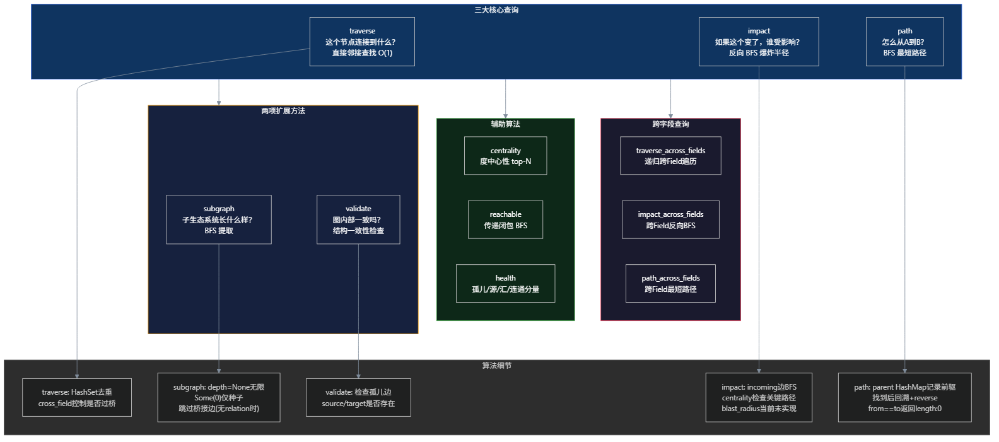
重要纠偏：POSITIONING_7_25.md 明确指出内核查询面固定为三个原语：traverse、impact、path。subgraph 和 validate 是这三个的组合或工具，不是第四、第五个"核心查询"。
三大核心查询
| 查询 | 回答什么问题 | 算法 | 复杂度 | 关键细节 |
|---|---|---|---|---|
traverse(from, relation?, cross_field) | 这个节点连接到什么？ | 直接邻接查找 | O(1) | HashSet 去重；cross_field 控制是否过桥 |
impact(changed) | 如果这个变了，谁受影响？ | 反向 BFS | O(V+E) | 从 incoming 边出发递归向上；centrality 检查关键路径；blast_radius 当前未实现 |
path(from, to, cross_field) | 怎么从 A 到 B？ | BFS 最短路径 | O(V+E) | parent HashMap 记录前驱；找到后回溯+reverse；from==to 返回 length:0 |
两项扩展方法
| 查询 | 回答什么问题 | 算法 | 关键细节 |
|---|---|---|---|
subgraph(seeds, depth?, relation?) | 子生态系统长什么样？ | BFS 提取 | depth=None 无限，Some(0) 仅种子；无 relation 时跳过桥接边 |
validate() | 图内部一致吗？ | 结构检查 | 检查孤儿边（source/target 是否存在） |
辅助算法
| 算法 | 说明 |
|---|---|
centrality(limit) | 度中心性（in + out degree），降序排列取 top N |
reachable(from) | 传递闭包 BFS，返回所有可达节点（排除自身） |
health() | 孤儿（0 in + 0 out）、源点（有出无入）、汇点（有入无出）、BFS 统计断连组件数 |
跨字段查询
| 查询 | 算法 | 关键细节 |
|---|---|---|
traverse_across_fields(start_field, from, relation, max_depth) | 递归跨 Field 遍历 | 过滤 Bridges 边，递归进入目标 Field；visited_fields 和 visited_nodes 防循环 |
impact_across_fields(changed) | 跨 Field 反向 BFS | 遍历所有 Field 的 incoming 边；Bridge 自动跟随 |
path_across_fields(from, to, start_field) | 跨 Field BFS 最短路径 | BFS 状态含 current_field；field_path 记录每步所在字段 |
跨字段桥接机制
Bridge 是 Field 之间的双向连接，使查询可以自动跨越 Field 边界。
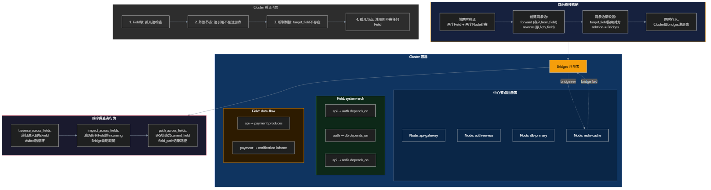
Bridge 创建流程
- 验证两个 Field 和两个 Node 都存在
- 创建两条边：forward（存入 from_field）和 reverse（存入 to_field）
- 两条边都设置
target_field指向对方字段，relation = Bridges - 同时存入 Cluster 级别的
bridges注册表 - ID 格式：
bridge-{from_field}-{source_node}-{to_field}-{target_node}-fwd/rev
Cluster 四层验证
| 层级 | 检查内容 | IssueCategory | 严重度 |
|---|---|---|---|
| Field 级 | 孤儿边（source/target 不存在） | OrphanEdge | Error |
| 外部节点 | 边引用不在 Cluster 注册表中 | ForeignNode | Error |
| 断裂桥接 | Bridge 的 target_field 指向不存在的 Field | BrokenBridge | Error |
| 桥接注册表一致性 | 验证 bridges 中所有引用的节点和字段存在 | — | Error |
| 孤儿节点 | 注册但不在任何 Field 中 | OrphanNode | Warning |
Cluster 其他方法
| 方法 | 说明 |
|---|---|
new(id, name, visibility) | 创建空 Cluster，初始化时间戳 |
register_node(node) | 注册节点到中心注册表 |
unregister_node(id) | 从注册表和所有 Field 图中删除 |
create_field(id, name, desc) | 创建新字段（子图） |
diff(other) | 对比两个 Cluster 差异（按 ID 匹配，WEIGHT_EPSILON=1e-10） |
subgraph(field_id, seeds, depth, relation) | 从指定字段提取子图 |
CLI 命令系统
11 个命令覆盖创建、管理、验证、共享和测试全流程。使用 clap 框架。
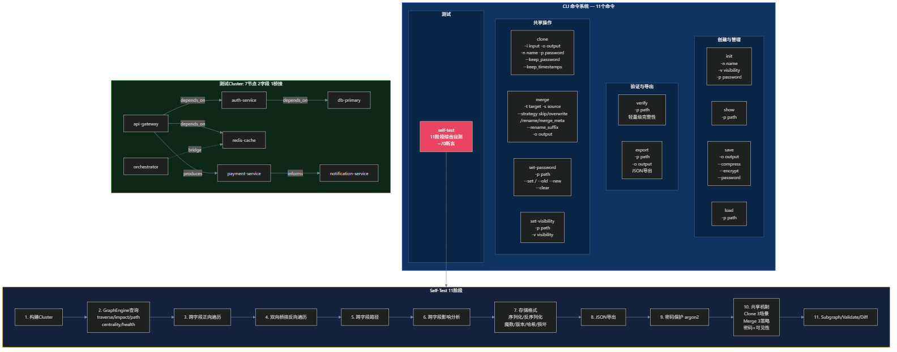
命令清单
| 命令 | 功能 | 关键参数 |
|---|---|---|
init | 初始化新 Cluster | -n name, -v visibility (默认 private), -p password |
show | 显示 Cluster 信息 | -p path |
save | 保存为 .stz 文件 | -o output (默认 test-cluster.stz), --compress, --encrypt, --password |
load | 加载 .stz 文件 | -p path |
verify | 轻量级完整性验证 | -p path |
export | 导出为 JSON | -p path, -o output (默认 cluster.json) |
clone | 克隆 Cluster | -i input, -o output, -n name, -p password, --keep_password, --keep_timestamps |
merge | 合并两个 Cluster | -t target, -s source, --strategy (默认 skip), --rename_suffix, -o output |
set-password | 设置/修改/清除密码 | -p path, --set / --old --new / --clear |
set-visibility | 设置可见性 | -p path, -v visibility |
self-test | 11 阶段综合自测 | （无参数） |
Self-Test 11 阶段（~70 断言）
- 构建 Cluster（7 节点, 2 字段, 1 桥接）
- GraphEngine 查询（traverse/impact/path/centrality/health）
- 跨字段正向遍历
- 双向桥接反向遍历
- 跨字段路径
- 跨字段影响分析
- 存储格式（序列化/反序列化/魔数/版本/哈希/损坏检测）
- JSON 导出
- 密码保护（argon2）
- 共享机制（Clone 3 场景 + Merge 3 策略 + 密码生命周期 + 可见性）
- Subgraph/Validate/Diff
测试 Cluster 数据
7 个节点：api-gateway, auth-service, db-primary, redis-cache, orchestrator, payment-service, notification-service。2 个字段：system-arch（5 条边）+ data-flow（4 条边）。1 个双向桥接：orchestrator ↔ redis-cache。
验证命令
cd crates/statuz-core
cargo run -- self-test # 11 阶段 ~70 断言
cargo test # 单元测试
cargo clippy -- -D warnings # 代码质量
scripts/e2e.ps1 # 端到端 11 阶段
scripts/build.ps1 # 5 步构建验证CI/CD 配置
| 文件 | 触发 | 步骤 |
|---|---|---|
.github/workflows/ci.yml | push/PR 到 main | cargo build → cargo test → cargo clippy → cargo run -- self-test |
.github/workflows/release.yml | 推送 v* tag | 创建 GitHub Release → 构建 release 二进制 → 打包 statuz-core.exe → 上传 release asset |
Agent 交互框架
已设计但尚未实现的 4 阶段交互框架。7 份框架文档已完成设计（knowledge-base/07-agent-interaction/），实现需要 18 个新算法 + 6 个新 crate。
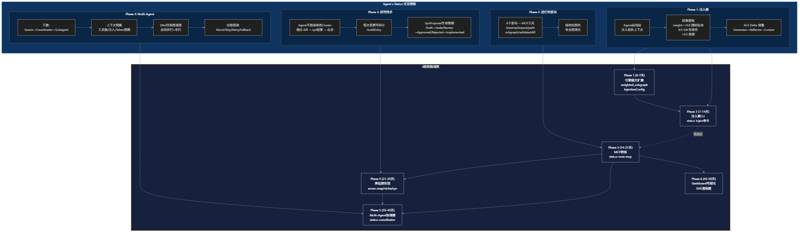
Phase 1: 注入层协议
Agent 启动前，Statuz 将权重过滤后的拓扑上下文注入初始 prompt。Context Injection 而非 Inheritance。
- 权重感知：weight ≥ 0.8 强制包含，0.5-0.8 有条件包含，<0.5 按需返回
- ACE 式 Delta 增量更新（Generator → Reflector → Curator）
- CLI + MCP 双通道
Phase 2: 运行时查询协议
Agent 执行过程中按需查询拓扑信息。6 个查询映射为 MCP 工具：traverse/impact/path/subgraph/validate/diff。结构化契约，非自然语言通信。
Phase 3: 回写同步协议
Agent 不直接修改 Cluster，通过 diff → syn 提案 → 合并流程。每次变更可审计（AuditEntry）。Agent 的修改是"提议"不是"执行"。
- SynProposal 生命周期：Draft → UnderReview → Approved/Rejected → Implemented
Phase 4: Multi-Agent 协调
- 三层架构：Swarm → Coordinator → Subagent
- 上下文隔离：工具集隔离、注入上下文隔离、Token 预算独立
- DAG 任务图调度（自动并行+串行）
- 分级错误处理：Abort / Skip / Retry / Fallback
表征层集成
arrow-map（输入桥接）→ Engine（执行）→ niche（语义理解）→ syn（决策审计）→ Cluster（持久化）。三个 crate 对应三个交互阶段，不创造独立存储格式。
Dashboard 可视化
Dashboard 是只读层，Agent 不直接操作 DOM。可视化即序列化：SubgraphResult/DiffResult/ImpactResult/PathResult 都可序列化为 SVG。4 种可视化类型：子图、变更对比、影响半径、执行轨迹。
开发路线图
当前状态（Phase 4 引擎完善）
| 任务 | 优先级 | 状态 |
|---|---|---|
| 存储格式升级（加密 zstd + 压缩 chacha20） | P0 | 已完成 |
| 单元测试（5 模块边界场景） | P0 | 已完成 |
| 端到端脚本 e2e.ps1 | P0 | 已完成 |
| README.md 撰写 | P0 | 已完成 |
| AGENTS.md 更新 | P0 | 已完成 |
| GitHub CI 完善 | P1 | 部分完成 |
| GitHub Release v0.1.0-alpha | P1 | 未执行 |
| 官网部署 GitHub Pages | P1 | 未执行 |
Agent × Statuz 实现路线图（6 阶段）
| Phase | 时间 | 目标 | 核心交付 | 依赖 |
|---|---|---|---|---|
| Phase 1 | 0-7天 | 引擎能力扩展 | weighted_subgraph, InjectionConfig, SubAgentLifecycle, ConflictDetection | 无（前置条件） |
| Phase 2 | 7-14天 | 注入层 CLI | statuz inject 命令, Markdown/JSON 输出, ACE Delta 增量 | Phase 1 |
| Phase 3 | 14-21天 | MCP 桥接 | 6 个查询 + inject 作为 MCP 工具, statuz-core-mcp crate | Phase 1（可与 Phase 2 部分并行） |
| Phase 4 | 21-35天 | 表征层实现 | arrow-map 解析器, niche 漂移检测, syn 提案审批 | Phase 2 |
| Phase 5 | 35-45天 | Multi-Agent 协调器 | statuz-coordinator crate, DAG 调度, Subagent 生命周期 | Phase 2+3+4 |
| Phase 6 | 45-50天 | Dashboard 可视化 | SVG 渲染器（子图/差异/影响半径/时间线） | Phase 3 |
算法规划
现有算法 46 个（A1-A16 GraphEngine + B1-B16 Cluster + C1-C15 Storage），需新增 18 个算法，复用 11 个现有算法。
- 高优先级（Phase 1-2）：NEW-1 weighted_subgraph > NEW-2 InjectionConfig > NEW-5 ConflictDetection > NEW-4 TaskDependency > NEW-3 SubAgentLifecycle
- 中优先级（Phase 3-4）：MCP 序列化 > 格式化 > Delta 更新 > 剪枝 > 限流 > 解析器 > 漂移检测
- 低优先级（Phase 5-6）：DAG 调度 > 执行器 > SVG 渲染器
未来方向
短期
- 跨 Cluster 引用
- 版本管理（三路合并）
- 可视化（Web/TUI/Graphviz）
中期
- MCP 集成（Rust 重写或桥接）
- 惰性克隆（Copy-on-Write）
- 索引优化
长期
- 图计算引擎（PageRank/社区发现）
- 协作平台（实时同步 CRDT）
- 生态系统（MCP 插件/仪表盘/CI 集成）
关键架构决策记录
| ADR | 决策 | 理由 |
|---|---|---|
| 001 | Rust 替代 TypeScript | 图算法性能、零 GC、内容可寻址对齐、范式不可逆转换 |
| 002 | Cluster 取代 Arrow Map/niche/SYN | 单一容器简化存储、自包含、内容可寻址 |
| 003 | 三项查询是引擎全部 API | 对应探索/风险评估/路径规划，覆盖 95% 场景 |
| 003a | 四项额外方法 (subgraph/validate/diff) | 支持 niche drift detection 和 SYN 变更决策 |
| 004 | Field 子图 + Bridge 桥接 | 视角隔离 + 跨域通信 + 路径追踪 |
| 005 | 离线共享 (Clone+Merge) | 简单、安全、用户可控 |
| 006 | 内存优先，序列化是快照 | 性能、简单、用户控制 |
| 007 | msgpack 而非 YAML | 确定性序列化、二进制安全、小 3-5 倍、快 10-100 倍 |
| 008 | BFS 而非 Dijkstra | 无权图，BFS 保证最短路径 |
| 009 | 零非 serde 依赖 | 图算法用 std 集合，~180 行代码不需第三方库 |
| 010 | clap CLI 解析 | 自动生成 help/version，类型安全 |
| 011 | 单页 HTML 官网 | 零构建、零依赖、直接 GitHub Pages |
| 012 | Architectural Blueprint 设计 | 与产品一致、与 Logo 一致、差异化 |
方法论
决策框架
- 范式转换原则：最小可行单位→引擎/图容器；用户最常操作→查询节点关系；不变→拓扑结构/内容寻址/离线工作
- 决策优先级：用户价值 > 工程简洁 > 可验证性 > 可逆性
- 反模式：通用化陷阱、协议化陷阱、文档化陷阱
- 三个测试问题：服务硬需求？用户可感知变化？清楚理解 trade-off？
开发工作流
- 阶段式开发：规划→确认→实施→验证→交接
- 计划先行、严格遵循、验证驱动、交接清单
- 语言策略：代码英文、文档中文、官网英文
- 关键工作流：
/grill-with-docs→/tdd→/code-review→ commit
验证策略
- Self-Test 是核心验证机制（集成测试，11 Phase，~70 断言）
- 单元测试覆盖边界情况（5 个模块，19 个边界场景）
- CI：cargo build + test + clippy + self-test
- E2E：
scripts/e2e.ps111 阶段端到端测试
研究方法
- 信息收集优先级：代码库 > 记忆 > Web 搜索 > 权威源
- 范式转换触发条件：文档与代码脱节、复杂度不可控、测试覆盖率下降、"本该如此"的直觉
未解决问题
存储与序列化
- 加密密钥管理：当前密码通过 CLI 参数明文传入，不安全。可能方案：环境变量、密钥文件、系统密钥链
- 大文件处理：当前全量读写，无流式处理。大 Cluster（>100MB）可能内存溢出
- 加密/压缩端到端验证：代码已实现但尚未进行完整前端验证（加密文件加载、压缩文件加载、组合、向后兼容性）
共享与合并
- 跨 Cluster 引用：未实现。每个 Cluster 完全独立。可能方案：引用 ID+文件路径、共享节点注册表、惰性加载
- 三路合并：当前 Merge 是"两路"（源 vs 目标），缺少共同祖先。可能导致合并结果不准确
- 惰性克隆：当前 Clone 是全量深拷贝 O(n)。可能方案：Copy-on-Write、引用计数
- 合并时密码验证：源 Cluster 有密码时是否要求验证才能合并？未实现
- 跨 Cluster diff 性能：全量比较，>10000 节点可能性能不足
查询与算法
- 路径查询索引：长路径（>100 节点）BFS 效率可能不足。可能方案：双向 BFS、节点标签索引
- Impact 查询精度：当前简单反向 BFS，未考虑边类型和深度限制
- blast_radius：当前为空 Vec，未实现
- 图一致性检查：部分实现，缺少循环依赖检测、拓扑排序、类型兼容性检查
- 子图查询性能边界：大图（>1000 节点）深度无限制时未做基准测试
- diff 的 meta 字段处理：meta 不参与比较（有意设计），如需检测 meta 变更应使用专门的 meta_diff 方法
表征层与 Agent 交互
- niche/SYN/Arrow Map 占位 crate：已创建为占位符，编译通过，无功能逻辑。需在引擎核心稳定后从 niche 开始实现
- MCP 集成：旧 TypeScript MCP Server 需被 Rust 版本取代或作为桥接保留。未决定
- Agent 交互框架：7 份框架文档已完成设计，实现尚未开始。需要 18 个新算法 + 6 个新 crate
文档与交付
License 不一致：README.md 标注为 MIT，hard-rules.md 标注为 Apache-2.0。需人工确认。
- GitHub Release：未创建 v0.1.0-alpha release。Phase 6 任务
- CHANGELOG.md：记录的是旧 TS 系统版本（0.1.0-draft 到 0.4.1），Rust 引擎重写后尚未有正式版本号
官网问题
- Google Fonts 加载：Instrument Serif 和 DM Sans 在中国大陆可能被墙。缓解：font-display: swap + 回退字体
- SEO：单页应用对 SEO 不友好。基本 OG 标签已设置，sitemap 和结构化数据未实现
硬规则
来源：AGENTS.md（权威来源，与 knowledge-base 冲突时以 AGENTS.md 为准）
身份规则
- Statuz 不是传输协议、不替代 MCP、不实现 A2A（A2A 字段是预留占位符）
- Statuz 永远不是传输协议。Signal Bus 是伴侣基础设施，不是协议的一部分
- Statuz 永远不替代 MCP。只能通过 MCP 访问，不能替代 MCP
- Statuz 要实现自己的 A2A 模式
- 优先级层级不可变。子系统可用性绝对优先于协议兼容性特性
范式规则
- 不添加 YAML 文件（旧范式已死）
- 不复活 niche/SYN/Arrow Map 文件格式（有价值则作为 Rust 方法实现）
- 表示层 crate 不得创建独立存储/CLI/Schema/序列化
- 不添加 CLI 命令在 Engine 稳固之前
- 不添加数据库、服务器、网络调用
质量规则
- self-test 必须在每次变更后通过
- 代码语言必须是英文
- 零非 serde 依赖（图算法用 std 集合）
- 内存优先，序列化是快照
- 无
unwrap()在库代码中 - 无未使用变量或导入（或加
_前缀） - 无深嵌套（>4 层）
- 无硬编码文件路径或密钥
存储规则
- Cluster 是唯一存储单元——不再有 arrow maps, niche files, 或 syn proposals
- 存储格式不可变（magic + version 不能更改）
- 内容可寻址（blake3）
- 密码使用 argon2 哈希（绝不存储明文）
- 加密使用 chacha20 + argon2 派生密钥
设计规则
- Cluster 是信息宇宙的边界，两个 Cluster 之间不能联通（设计约束，非技术限制）
- Cluster 作为信息的基本交付单元，内部自洽
- Field 是语义子空间，共享节点但拓扑结构不同
- Metaclass 是独立理论系统，Statuz 的 field 是其具体化实例
决策规则
| 旧概念出现时 | 处理方式 |
|---|---|
| 引擎可计算？ | → 添加为 Rust 方法 |
| UI 关注？ | → 推迟到 Dashboard 阶段 |
| YAML 文件模式？ | → 丢弃 |
代码风格
- 不可变性：优先
&引用，避免Cell/RefCell。数据转换优先构造新实例 - 文件组织：一概念一文件，高内聚低耦合，200-400 行典型，800 最大
- 错误处理：
Result<T, E>用于可失败操作，Option<T>用于可能无返回值的操作，?传播错误，库代码不 unwrap - 输入验证：在公共 API 边界验证，用类型系统使非法状态不可表示
关键文件索引
最高优先级（必读）
| 文件 | 说明 |
|---|---|
AGENTS.md | 引擎工作指南（代理必读，硬规则权威来源） |
POSITIONING_7_25.md | 权威定位文档（2026-07-25，与其他文档冲突时以此为准） |
crates/statuz-core/src/ | Rust 引擎核心代码（全部源码） |
高优先级
| 文件 | 说明 |
|---|---|
STATUZ设计哲学的论述.md | 设计哲学论述 |
CONTEXT.md | 领域上下文定义 |
knowledge-base/04-architecture/ | 架构文档（engine-architecture.md, design-decisions.md, storage-format.md） |
knowledge-base/07-agent-interaction/ | Agent 交互框架（7 份文档 + 算法规划） |
knowledge-base/05-hard-rules/hard-rules.md | 硬规则 |
中优先级
| 文件 | 说明 |
|---|---|
README.md | 项目 README |
knowledge-base/06-unresolved/open-questions.md | 未解决问题 |
knowledge-base/02-plans/ | 路线图和计划 |
knowledge-base/01-achievements/ | 已完成功能 |
knowledge-base/03-methodology/ | 方法论 |
scripts/e2e.ps1 | 端到端测试脚本 |
scripts/build.ps1 | 构建验证脚本 |
.github/workflows/ci.yml | CI 配置 |
.github/workflows/release.yml | Release 配置 |
低优先级（仅参考）
| 路径 | 说明 |
|---|---|
leftover/ | 所有过时文档、Schema 和示例（旧范式存档，不可恢复） |
packages/ | 遗留 TS/Python 代码（冻结，待替换，不可恢复） |
examples/ | 旧范式 YAML 示例（与新 Rust 引擎不兼容） |
交接清单
下一个 Agent 必须知道的
- 项目已从 TypeScript+YAML 范式转换为 Rust 图引擎范式（2026年7月）
- statuz-core 是唯一活跃 crate，~2500 行 Rust 代码
- arrow-map/niche/syn 是占位符 crate，依赖 statuz-core，无功能逻辑
- packages/ 下所有 TS/Python 代码已冻结，不可恢复
- leftover/ 下所有旧文档仅作参考，不可恢复
- POSITIONING_7_25.md 是权威定位文档，冲突时以此为准
- AGENTS.md 是硬规则权威来源
- self-test 必须在每次变更后通过：
cd crates/statuz-core && cargo run -- self-test - 内核查询面固定为三个原语：traverse, impact, path
- Cluster 是唯一存储单元，两个 Cluster 之间不能联通（设计约束）
- Field 是子图视图，Bridge 实现跨 Field 双向连接
- 存储格式：msgpack + blake3 + argon2 + zstd + chacha20
- 零非 serde 依赖原则
- Agent 交互框架已设计 7 份文档，需要 18 个新算法 + 6 个新 crate
- License 存在不一致（README: MIT, hard-rules: Apache-2.0），需人工确认
- blast_radius 未实现（当前为空 Vec）
- 加密密钥通过 CLI 明文传入，不安全（待改进）
- GitHub Release v0.1.0-alpha 尚未创建
- CHANGELOG.md 记录的是旧 TS 系统版本，Rust 引擎重写后无正式版本号
- Metaclass 是独立理论系统，Statuz 的 field 是其具体化实例
- 主动释放是端到端管道：内核→表征层→注意力层→工作集投影
建议的下一步
- 验证环境：运行
cd crates/statuz-core && cargo run -- self-test确认引擎正常 - 完善 Phase 4：完成 GitHub CI 配置和 Release v0.1.0-alpha
- 开始 Agent 交互 Phase 1：实现 weighted_subgraph 和 InjectionConfig
- 修复 License 不一致：确认项目使用的 License
- 实现 blast_radius：完成 impact 查询的爆炸半径功能
验证命令汇总：
cd crates/statuz-core
cargo run -- self-test # 11 阶段 ~70 断言
cargo test # 单元测试
cargo clippy -- -D warnings # 代码质量
scripts/e2e.ps1 # 端到端 11 阶段
scripts/build.ps1 # 5 步构建验证交接规则
在每次有意义的变更结束时，总结：
- Engine 中改变了什么
- 为什么改变
- 如何验证（
cargo run -- self-test） - 什么尚未解决
- 下一个 Agent 应该构建什么